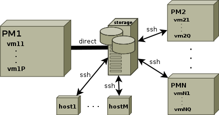

Overview
Introduction
The Tar-LVM suite is a set of Bash scripts that facilitates backing up Linux operating systems using GNU Tar. It is designed to perform consistent backups of the whole operating systems by creating snapshots of their filesystems either by using LVM or by remounting non-LVM filesystems read-only during the backup. The Tar-LVM tools can be thus invoked while the systems are running with minimal downtime of most services that is necessary for creating the snapshots. Because GNU tar is used as the archiving tool, the backups are done on the filesystem basis, i.e. from inside of the running systems.
Tar-LVM is able to store the result compressed archives to a remote network storage accessible just via SSH, e.g. to a NAS, to a server with a large RAID array or simply to a chosen local device if backing up a single host (e.g. a Linux workstation). Moreover, it also offers the possibility to be invoked on a physical server with the Linux native KVM virtualization and attach the backup device to each virtual machine during its backup. The backup device must be connected to the physical machine in that case.
Deployment scheme
As mentioned above, the Tar-LVM tools can be used to backup chosen Linux hosts over network to a network storage via SSH. The destination data storage can be a standalone system such as a NAS or a device connected to one of the machines (e.g. a RAID array or simply large hard disk).
The scheme is depicted on the following figure.
|  |
As you can see, it is possible to backup whole physical hosts with virtualization (tested with KVM), virtual hosts or separate hosts. The network backup can be run in parallel and it is possible to specify maximal number of parallel backups per each trigger point, i.e. per node which triggers the backup for a subset of hosts.
Main features
- consistent backup of a snapshot of each operating system
- short downtime of all services if LVM volume layout is suitable
- consistent operating system backup even without LVM, but with long downtime period covering whole backup
- network backup over SSH and/or local backup to any device attached to the machine or to the physical machine in case of KVM virtualization
- backup from inside of running operating systems
- support of any filesystem fully supported by GNU tar including POSIX ACLs (tested with ext2, ext3, ext4, xfs and btrfs)
- support of both full and incremental backups
- encrypted network communication
- optionally encrypted backup device with LUKS, but no support of encrypted archives
- parallel network backups with maximal number of backups running concurrently
- network backups triggered from chosen number of points, e.g. centrally from one point, from several points or from each backup node
- log output to files on the target storage and sent by mail
- separate detection of backup errors by using the check mode with backup result analysis
- designed to be run automatically from cron